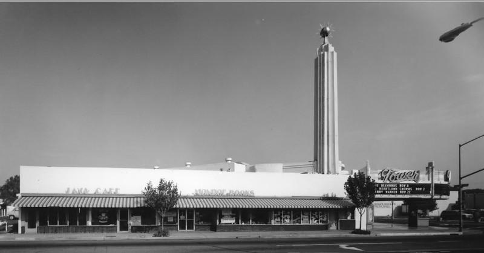
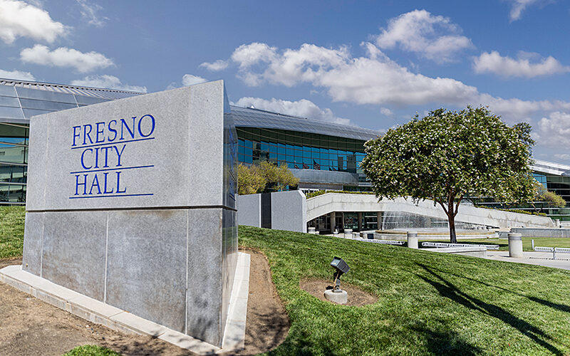

Lord, give us a clean hand and a straight mouth. Do not let us fund what we came to name. Amen.
You can stand on a Tower District sidewalk with a microphone in one hand and a sack of free goods in the other and call the whole hour church. The people in front of you already know the order of service. The goods come first. The sermon is the price of the goods. They will listen long enough to collect. Then they will walk the half block and convert what you handed them into the thing you just preached against.
That joining is the sin. Not hunger. Not a sermon. The joining, when the gift keeps the chain on and the preaching is laid over the transaction like a blessing.

Say who this is not about, before anyone hides behind a widow. It is not about the child. It is not about the woman too sick to stand. It is not about the man who will eat the sandwich while you watch, and who has no pocket left to trade. James is not canceled by this sermon. James is about a different sin, and it is a real one.
James 2:15-16
Suppose you see a brother or sister who has no food or clothing, and you say, "Good-bye and have a good day; stay warm and eat well" but then you don't give that person any food or clothing. What good does that do?
James is talking about a brother or sister, and about food and clothing that stay food and clothing. Empty words to a cold body are dead faith. A folded bill that becomes a point is a different sin. Do not pick a favorite and call the other one love.
2 Thessalonians 3:10
Even while we were with you, we gave you this command: "Those unwilling to work will not get to eat."
Paul did not say the sick should starve. He said the unwilling should not be kept. If a man will not work, he is not to eat from the common table. The church was not a vending machine with a hymn taped to the front.
2 Thessalonians 3:11-12
Yet we hear that some of you are living idle lives, refusing to work and meddling in other people's business. We command such people and urge them in the name of the Lord Jesus Christ to settle down and work to earn their own living.
Read the word unwilling. A body that cannot work is not the same case as a body that will not. If you cannot tell the difference, stay long enough to learn it. Do not solve your ignorance with a handout and a short sermon.
Ephesians 5:11
Take no part in the worthless deeds of evil and darkness; instead, expose them.
Take no part. A gift that buys the next dose is a part. You did not smoke it. You paid for it and called the payment love. Then you preached at the person you just supplied. That is partnership, followed by a speech. The speech does not wash the partnership. It advertises it.
Watch the trade. Cash is the cleanest version, and the worst. Food that will not be eaten in front of you is the next version. New clothes that walk to a reseller are the same version with a longer walk. Hygiene kits, bus passes, and the polite sack from a trunk ministry all have a street price. If you do not know the price, the buyer does. Preaching over a known street price is not naivete after the third Saturday. It is a choice.
Proverbs 20:1
Wine produces mockers; alcohol leads to brawls. Those led astray by drink cannot be wise.
What was true of wine is not softer when the substance is stronger. A person led astray by the dose is not in a teaching mood because you brought sandwiches. He may nod. Nodding is cheap. You can still warn him. You cannot buy his attention and call the purchase a conversion.
Isaiah 5:20
What sorrow for those who say that evil is good and good is evil, that dark is light and light is dark, that bitter is sweet and sweet is bitter.
When the bag is called ministry, and the dose is called harm reduction, and the sidewalk market is called compassion, the names have been swapped. Bitter is being sold as sweet. The sorrow in that verse is not a mood. It is a verdict on the swap.
Galatians 6:7-8
You will always harvest what you plant. Those who live only to satisfy their own sinful nature will harvest decay and death from that sinful nature. But those who live to please the Spirit will harvest everlasting life from the Spirit.
You harvest what you plant. Plant cash in an open hand that has already told you where it is going, and you will harvest the same corner tomorrow, with the same sermon, and a new sack. The supplier harvests a ministry that cannot end, because he is the reason it cannot end.

The sin does not stay on the sidewalk. It gets a budget. City Hall can fund the sack. A nonprofit can brand the sack. I am not charging a named clerk with a crime from this page. Contested program claims stay contested. The pattern does not need a verdict to be named. Public money that buys supplies for people who will not turn, and then prints a brochure about recovery, is the same joining of gift and speech. The speech got a logo. The gift still walks around the corner.
Washington can fund the program that trains the person holding the sack. Distance does not baptize the pattern. A dollar that left a federal account and came back as a tradable good on Olive Avenue is still a dollar in the trade.
Acts 3:6
But Peter said, "I don't have any silver or gold for you. But I'll give you what I have. In the name of Jesus Christ the Nazarene, get up and walk!"
Peter did not say he had no mercy. He said he had no silver. What he had was a name and a command to rise. A preacher who has only goods, and no call to get up, has less than Peter had, and spends more. Silver without a command to rise keeps the hearer seated.
Galatians 6:9-10
So let's not get tired of doing what is good. At just the right time we will reap a harvest of blessing if we don't give up. Therefore, whenever we have the opportunity, we should do good to everyone, especially to those in the family of faith.
Do not get tired of doing good. A photograph of a full trunk is not the test. The test is whether the thing you gave is still what you gave it for an hour later. A meal eaten in front of you is good. A ride to a door that requires a change is good. A warning, given as you would warn a brother, is good. A sack that has a street price is not good because you prayed over it.
So here is the charge. Stop buying the chain. Preach the break. If you give, give what cannot be traded for the dose, and stay until it is used for what you gave it for. If they will not turn, do not fund the refusal and call it evangelism. Leave the silver in your pocket. Give what you actually have. The name, the warning, and the door.
Lord, make the gift match the word. Make the word a call to rise, not a receipt. Amen.
Sources
- Scripture quotations are from the New Living Translation. Wording checked against Bible Gateway and Bible Study Tools for 2 Thessalonians 3:10-12, James 2:15-16, Ephesians 5:11, Proverbs 20:1, Isaiah 5:20, Galatians 6:7-10, and Acts 3:6.
- Tower Theatre photograph: historic exterior, Olive Avenue, published with The Clio entry for the Tower Theatre. Used as the public landmark of the district, not as a current street census.
- Fresno City Hall photograph: exterior sign and building, published with First Amendment Coalition reporting on Fresno City Council open-meetings litigation. The building is the local seat of the budget. The photo is not evidence of a named crime.
- United States Capitol photograph: daytime exterior, published by Cherry Blossom Watch. The building is the farther seat of public money. The photo is not evidence of a named crime.